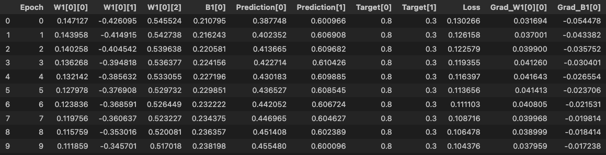

The Neural Network¶
Step 1: The Neural Network Structure¶
Analogy: Neura’s Painting Studio¶
Imagine you’re training a robot artist named Neura. She creates paintings based on three key inputs:
- Color mix ratio
- Brush pressure
- Tilt angle
Each painting starts from a sketch made of these 3 values.
But Neura doesn’t just throw those values directly onto the canvas — she sends them through a sequence of creative stations (layers), where she processes, transforms, and combines the inputs using adjustable brushes (weights and biases) and creative filters (activation functions).
What Does the Network Look Like?¶
We’re using:
- 3 inputs (color, pressure, tilt)
- 1 hidden layer with 4 neurons
- 1 output (a score or prediction)
import torch
import torch.nn as nn
class NeuralPainter(nn.Module):
def __init__(self):
super().__init__()
self.layer1 = nn.Linear(3, 4) # 3 inputs → 4 hidden neurons
self.layer2 = nn.Linear(4, 1) # 4 → 1 output
def forward(self, x):
x = torch.relu(self.layer1(x)) # Neura applies her creative filter
return self.layer2(x)
model = NeuralPainter()
Example Input: Neura Paints for Two Sketches¶
inputs = torch.tensor([
[0.5, 0.7, 0.3], # Sketch 1: a gentle stroke with a warm tone
[0.9, 0.2, 0.6] # Sketch 2: a bold stroke with a tilted brush
])
prediction = model(inputs)
The input shape is [2, 3]:
- 2 samples (batch size)
- 3 features each (color, pressure, tilt)
Neura paints both sketches at once using the same model!
How model(inputs) Works Internally¶
When you run model(inputs), PyTorch is doing this under the hood:
model.__call__(inputs) # Magic from nn.Module
→ model.forward(inputs) # This is your blueprint in action
Analogy: Neura’s Painting Process¶
Neura has multiple stations with different brushes. The forward() method is the blueprint that tells her:
“Here’s how to go from the sketch to the final painting.”
So in practice:
- She sends inputs through
layer1 - Applies a filter (ReLU) to remove weak/unhelpful strokes
- Passes the result to
layer2to finalize the artwork
Activation Function: Why ReLU?¶
Analogy: ReLU as Neura’s "Creative Filter"¶
After the first station (layer), Neura stops and reflects:
“If a stroke had a positive effect, I’ll keep it. If it hurt the painting (negative), I’ll just erase it.”
That’s what ReLU (Rectified Linear Unit) does.
In math:¶
ReLU[x] = Max[0, x]
Why is it important?¶
Without ReLU (or another activation function), Neura’s network is just a giant linear equation. No matter how many layers she adds, she’s still only able to draw straight lines — no curves, corners, shadows, or depth.
ReLU adds non-linearity, giving her the power to paint abstract shapes, fluid transitions, and creative patterns.
Heads-Up: The Vanishing Gradient Problem¶
In deeper networks, we train Neura by passing feedback backward through the layers — telling her how to improve.
With older activations like sigmoid or tanh, the feedback (gradient) gets squashed at each layer, until it’s too tiny to matter.
That means:
- Neura’s early brushes don’t get meaningful corrections
- Those layers stop learning
- Training slows down or fails
ReLU Fixes That¶
ReLU gradients are:
- 1 (if the output was positive)
- 0 (if the output was zeroed)
This helps gradients survive the trip back — so every brush in Neura’s chain gets useful feedback.
Visual Flow of Data¶
[Color, Pressure, Tilt] ← sketch features
↓
[Layer 1: Linear → ReLU] ← brush stroke + filter
↓
[Layer 2: Linear] ← combine and score
↓
[Final Prediction] ← painting score for each sample
Summary Table¶
| Concept | PyTorch | Neura Analogy |
|---|---|---|
| Inputs | [batch_size, 3] |
Sketches: color, pressure, tilt |
__init__() |
Layer definitions | Neura sets up painting stations |
forward() |
Flow of data | Neura’s blueprint for painting |
model(inputs) |
Calls forward() |
You hand Neura 2 sketches and ask her to paint them |
| Activation Function | ReLU |
Neura filters out weak/negative strokes |
| Vanishing Gradients | Solved by ReLU |
Neura’s early brushes still get good feedback |
Step 2: Input and Prediction (The Forward Pass)¶
Analogy: Neura Receives Sketches¶
You hand Neura two sketch requests:
- A warm, firm stroke with a light tilt
- A bold color, gentle pressure, and medium tilt
These sketches are represented as feature vectors (3 values each).
Neura uses her current brush settings (weights and biases — still random at first) to attempt her first paintings.
She follows the forward pass blueprint defined earlier, applying her brush strokes layer by layer.
Code Example (Batch of 2 sketches)¶
import torch
# Each row is a sketch with 3 features: [color, pressure, tilt]
inputs = torch.tensor([
[0.5, 0.7, 0.3], # Sample 1
[0.9, 0.2, 0.6] # Sample 2
])
# Neura tries painting using her current brush settings
prediction = model(inputs)
print(prediction)
- The input shape is
[2, 3]— 2 sketches, 3 features each. - The output shape is
[2, 1]— Neura returns a prediction score for each painting.
What Actually Happens (Under the Hood)¶
- Inputs go through
layer1: Neura combines the sketch features using her hidden brushes. - ReLU removes unhelpful strokes (negative outputs).
- Outputs go through
layer2: Neura blends the remaining strokes into a final score.
Analogy¶
“Neura uses her internal logic and current brushes to paint what she thinks each sketch should look like. It’s her best guess — for now.”
At this point, her painting is likely far from perfect — she hasn’t received any feedback yet!
Step 3: Loss Function – How Bad Was the Painting?¶
Analogy: Neura Gets Judged¶
After Neura finishes her two paintings, you compare each one to a reference painting and say:
“Here's what you were actually supposed to paint.”
This comparison generates a loss value — a number representing how far off her guesses were.
The Loss Function¶
We’ll use Mean Squared Error (MSE) — a common choice when outputs are continuous (like price, score, etc.).
import torch.nn as nn
# Target values for each painting (the ideal outputs)
target = torch.tensor([[0.8], [0.3]]) # Ground truth for both samples
# Define the loss function
loss_fn = nn.MSELoss()
# Calculate how far Neura was from the real painting
loss = loss_fn(prediction, target)
print(loss)
What is MSE doing?¶
It calculates:
Loss = (1/n) * Sum[(ŷᵢ - yᵢ)², {i}]
“For each painting, square the difference between Neura's version and the correct one, then average those errors.”
Analogy (continued)¶
You, the mentor, hold up her two paintings next to the real ones and say:
“Painting #1 was too light. Painting #2 missed the tone.” “Let’s figure out how wrong each one was.”
This numeric feedback becomes the signal Neura will use to learn.
But we’re not done yet — she still needs to figure out which brushes to adjust, and how much. That’s what happens next with backpropagation.
Summary of Steps 2 and 3¶
| Step | Code | Neura Analogy |
|---|---|---|
| Prepare Inputs | inputs = torch.tensor(...) |
You hand her sketches to paint |
| Make Prediction | prediction = model(inputs) |
Neura paints using her current skills |
| Define Targets | target = torch.tensor(...) |
You show her what the real paintings should look like |
| Calculate Loss | loss = loss_fn(pred, target) |
You give her a number showing how far off she was |
Step 4: Backpropagation – Compute the Feedback¶
What Is Backpropagation?¶
Backpropagation is the process of computing how much each weight and bias contributed to the final error, using calculus (specifically the chain rule). It’s the feedback mechanism that lets Neura improve her painting technique.
Neura Analogy: Backprop as a Feedback Chain¶
Imagine Neura just finished painting two sketches. The results were off — maybe too pale, too harsh, or missing contrast.
You don’t just say:
“Do better next time.”
Instead, you help her trace each error back to the exact brush and stroke that caused it. That’s backpropagation:
- “Your final stroke added too much red.”
- “That red came from Layer 2’s pressure.”
- “Layer 1's brush angle influenced that stroke.”
Each brush station gets a personalized correction note.
What Happens in loss.backward()?¶
Once you've computed the loss:
loss = loss_fn(prediction, target)
loss.backward()
PyTorch:
-
Traverses the computation graph backward
-
Uses the chain rule to compute: ∂Loss/∂[Each Weight/Bias]
-
Stores those gradients in each parameter’s
.gradfield
Code Insight¶
model.layer1.weight.grad
model.layer2.bias.grad
These give the gradient values — the feedback Neura needs.
Neura’s Intuition¶
Before backprop:
“Hmm… my painting missed the mark.”
After backprop:
“Ah! Brush #1 was too heavy, and brush #3 was too soft. I’ll fix those.”
How the Chain Rule Guides Neura¶
Real Math Example (1-layer)¶
Let’s say:
- Input: x = 0.5
- Weight: w
- Output: ŷ = w * x
- Target: y = 1.0
- Loss: L = (ŷ - y)²
Apply chain rule:
dL/dw = (dL/dŷ) * (dŷ/dw) = 2(ŷ - y) * x
- ŷ = 0.8
- Error = ŷ - y = -0.2
- x = 0.5
- dL/dw = 2(-0.2) * 0.5 = -0.2
This is the gradient — the tweak Neura needs to apply.
Step 5: Optimizer – Apply the Corrections¶
Now that Neura has her feedback (gradients), she needs to act on it.
This is where the optimizer comes in. It decides how much to adjust each brush (weight/bias) based on the gradient.
The SGD Formula¶
w = w - η * gradient
Where:
- η = learning rate
- gradient = dL/dw
Code Example¶
optimizer = torch.optim.SGD(model.parameters(), lr=0.1)
# Apply the update (after loss.backward())
optimizer.step()
# Reset gradients before next loop
optimizer.zero_grad()
Neura Analogy: Different Optimizers¶
SGD (Stochastic Gradient Descent)¶
Neura takes your feedback literally and immediately:
“Brush #2 was off by 0.1? Got it — let me fix it by exactly that much!”
Simple and fast Can be noisy or unstable in tricky paintings
Adam (Adaptive Moment Estimation)¶
Neura now keeps a journal:
- Tracks feedback over time (momentum)
- Adjusts learning speed per brush
- Slows down where things are volatile, speeds up where it’s stable
optimizer = torch.optim.Adam(model.parameters(), lr=0.01)
More stable Works well on complex or noisy sketches Great for Neura when she’s dealing with many styles
Comparison Table¶
| Concept | SGD | Adam | Neura Analogy |
|---|---|---|---|
| Uses only latest gradient | yes | uses history too | Neura adjusts vs. Neura with memory |
| Adapts learning rate | Same for all | Learns per-parameter | Smart pacing for each brush |
| Stability | Can overshoot | Very stable | Careful & strategic learning |
Summary: The Feedback & Fix Loop¶
| Step | Code | Neura Analogy |
|---|---|---|
| Compute gradients | loss.backward() |
“How much did each brush cause the mistake?” |
| Read the gradients | param.grad |
Feedback note taped to each brush |
| Apply corrections | optimizer.step() |
Neura adjusts brush pressure/angle/color |
| Clear gradients | optimizer.zero_grad() |
Neura erases old notes before the next painting |
Step 6: Training Loop – Repetition Makes Perfect¶
Analogy: Practice Makes the Painter¶
At this point, Neura has:
A painting plan (forward())
A way to assess her results (loss_fn)
A feedback system (loss.backward())
A strategy to apply changes (optimizer.step())
But doing this just once won’t turn her into an expert. She needs to practice over and over — painting, reviewing, adjusting.
That’s where the training loop comes in.
What Happens in Each Epoch?¶
Each time Neura goes through the loop (i.e., an epoch), she:
- Receives a batch of sketch inputs
- Paints predictions using her current brushes
- Compares predictions to the reference paintings
- Computes how far off she was (loss)
- Traces the mistakes back to specific brushes (gradients)
- Updates each brush using the optimizer
- Clears feedback for the next round
Code – Logging Training Info in Pandas¶
We’ll train on 2 sketches using our existing NeuralPainter model.
import torch
import torch.nn as nn
import pandas as pd
# Define the model
class NeuralPainter(nn.Module):
def __init__(self):
super().__init__()
self.layer1 = nn.Linear(3, 2) # smaller for clarity
self.layer2 = nn.Linear(2, 1)
def forward(self, x):
x = torch.relu(self.layer1(x))
return self.layer2(x)
# Initialize
model = NeuralPainter()
optimizer = torch.optim.SGD(model.parameters(), lr=0.1)
loss_fn = nn.MSELoss()
# Input sketches (batch of 2) and targets
inputs = torch.tensor([
[0.5, 0.7, 0.3],
[0.9, 0.2, 0.6]
])
targets = torch.tensor([[0.8], [0.3]])
# Log training info
log = []
# Training loop
for epoch in range(10):
predictions = model(inputs)
loss = loss_fn(predictions, targets)
optimizer.zero_grad()
loss.backward()
# Extract data for logging (focusing on first neuron of layer1)
log.append({
'Epoch': epoch,
'W1[0][0]': model.layer1.weight[0][0].item(),
'W1[0][1]': model.layer1.weight[0][1].item(),
'W1[0][2]': model.layer1.weight[0][2].item(),
'B1[0]': model.layer1.bias[0].item(),
'Prediction[0]': predictions[0].item(),
'Prediction[1]': predictions[1].item(),
'Target[0]': targets[0].item(),
'Target[1]': targets[1].item(),
'Loss': loss.item(),
'Grad_W1[0][0]': model.layer1.weight.grad[0][0].item(),
'Grad_B1[0]': model.layer1.bias.grad[0].item(),
})
optimizer.step()
# Convert to DataFrame
df = pd.DataFrame(log)
How to Interpret the Table¶
This table is like Neura’s training diary. Each row = one epoch.

Here’s what the columns mean:
| Column | Meaning |
|---|---|
Epoch |
Iteration count (one painting session) |
W1[0][0] |
Weight from input 0 → neuron 0 in layer 1 |
W1[0][1], W1[0][2] |
Other weights for same neuron |
B1[0] |
Bias for that same neuron |
Prediction[0] |
Neura’s guess for Sketch #1 |
Target[0] |
Ground truth for Sketch #1 |
Loss |
Average squared error across both samples |
Grad_W1[0][0] |
Gradient for W1[0][0] — how much Neura should adjust it |
Grad_B1[0] |
Bias adjustment signal |
What to Look For:¶
- Predictions should get closer to targets
- Loss should decrease over time
- Weights and bias will change with each epoch (watch them learn!)
- Gradients should shrink → feedback becomes gentler as Neura improves
Summary¶
| Step | Action Taken | Neura Analogy |
|---|---|---|
| Loop begins | New epoch | Another painting session |
model(inputs) |
Forward pass | Neura paints using current brushes |
loss_fn(...) |
Compute error | You judge the result |
loss.backward() |
Backpropagation | Neura gets specific feedback |
optimizer.step() |
Apply update | Neura tweaks her brush settings |
optimizer.zero_grad() |
Clear old gradients | She starts fresh for the next sketch |